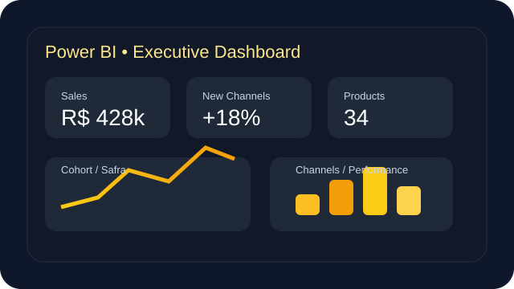
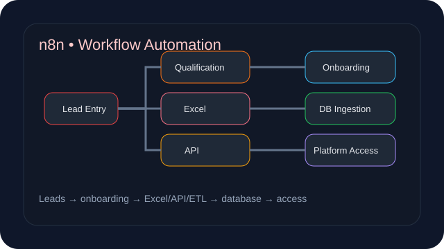
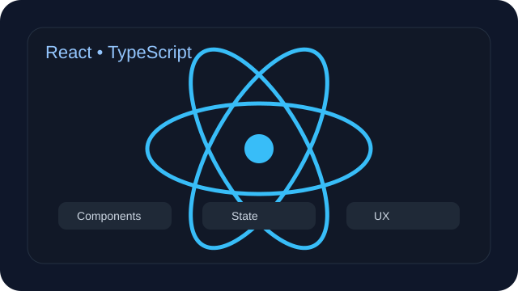
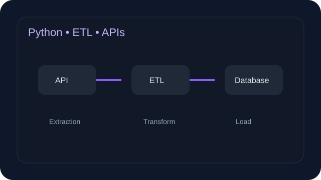
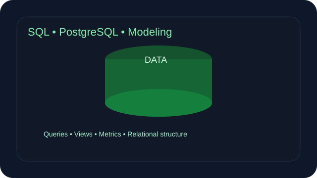
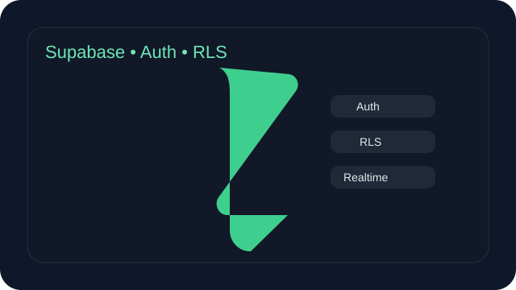

Desenvolvimento de software
Construção e evolução de aplicações reais, passando por interface, regras de negócio, autenticação, banco de dados, APIs, arquitetura multiempresa e deploy.
TECNOLOGIA • SOFTWARE • DADOS • AUTOMAÇÃO
Desenvolvimento de Software • Dados & BI
Profissional de tecnologia com experiência corporativa desde 2021 e atuação prática em SQL, Power BI, Python, modelagem de dados, automação e desenvolvimento de aplicações SaaS. Uma base técnica única para transformar problemas de negócio em dados, processos e software.
PERFIL PROFISSIONAL
Construção e evolução de aplicações reais, passando por interface, regras de negócio, autenticação, banco de dados, APIs, arquitetura multiempresa e deploy.
Experiência profissional com SQL, Power BI, DAX, Power Query, Python, ETL, análises executivas, indicadores, análises por safra/coorte e validação de regras de negócio.
Workflows com n8n e integrações com APIs, Excel e banco de dados para apoiar funis comerciais, onboarding, atualização de status, ETL e ingestão conforme o padrão da empresa.
DADOS & BI
Minha base em dados é profissional e corporativa. Trabalho com indicadores, modelagem, consultas, automações e regras de negócio sem expor informações internas ou confidenciais das empresas.
Criação de dashboards para vendas, novos canais, produtos, operação e visão executiva.
Análises por safra/coorte, funis, performance por canal e leitura gerencial do negócio.
Extração via API, tratamento de dados, ETL e ingestão em banco de dados conforme padrões internos.
Fluxos com n8n cobrindo entrada de leads, onboarding, atualizações de status e liberação de acesso à plataforma.
FERRAMENTAS & TECNOLOGIAS
Abaixo estão algumas das principais tecnologias e ferramentas que melhor representam minha atuação profissional e meus projetos.

Desenvolvimento de dashboards para diferentes setores, com foco em visão executiva, vendas, novos canais, produtos, KPIs e análises por safra/coorte.

Automação de workflows simples e robustos para operação de vendas de cursos: entrada de leads, onboarding, atualização de status, integração com Excel, APIs, banco de dados e acesso à plataforma.

Construção de interfaces modernas e responsivas para aplicações SaaS, com foco em componentes, experiência do usuário e manutenção.

Extração de dados, transformação, ingestão e automação de processos usando Python, APIs e rotinas de ETL.

Consultas, modelagem relacional, views, métricas e organização de dados para apoiar operações, indicadores e software.

Auth, PostgreSQL, RLS e Realtime aplicados ao desenvolvimento de produtos multiempresa com regras de acesso e dados protegidos.
PROJETOS REAIS
Os produtos possuem código-fonte privado por segurança e propriedade intelectual. O portfólio apresenta a dor, solução, tecnologias, arquitetura e somente os ambientes públicos de produção.
Dor: restaurantes operam pedidos, salão, cardápio, clientes, estoque e financeiro em processos separados.
Solução: ERP SaaS multiempresa que centraliza operação, pedidos, comandas, cardápio digital, clientes, estoque, financeiro e relatórios.
Arquitetura: React/TypeScript → Supabase Auth/APIs/Realtime → PostgreSQL com RLS multi-tenant → Vercel.
Ver produto em produção ↗Dor: lava-rápidos e estética automotiva precisam controlar agenda, clientes, serviços, equipe, comissões e financeiro sem depender de planilhas e mensagens.
Solução: plataforma multiempresa para clientes, serviços, agendamentos, funcionários, financeiro, comissões e relatórios.
Arquitetura: Next.js → Supabase Auth/Backend → PostgreSQL com isolamento por organização → Vercel.
Ver produto em produção ↗Dor: informações operacionais e indicadores dispersos dificultam acompanhamento e tomada de decisão.
Solução: hub web para centralizar informações, dashboards e rotinas em uma visão única.
Arquitetura: TanStack Start/Router/Query → Supabase → componentes de visualização → Vercel.
Ver produto em produção ↗EXPERIÊNCIA
Minha trajetória combina BI, dados, automação, suporte e desenvolvimento, unindo visão analítica com construção de software.
Analista de BI Jr
Analista de Dados
Analista Digital I / Estagiário de TI
Suporte N1 e Operações com IA
FORMAÇÃO & IDIOMAS
FADERGS — Análise e Desenvolvimento de Sistemas
Cursando, com conclusão prevista para dezembro de 2027.
Estudos e certificações em Python para Dados, Power BI, SQL, MySQL e ferramentas de análise.
Português: nativo.
Inglês: nível técnico bom para leitura de documentação, escrita e pesquisa; oralidade/conversação básica.
ALÉM DO CÓDIGO
Tenho interesse por tecnologia, inteligência artificial e automação, principalmente quando essas áreas são aplicadas para resolver problemas reais, simplificar processos e criar soluções úteis no dia a dia. Também gosto de desenvolver projetos próprios como forma de aprender, testar novas ideias e evoluir tecnicamente de maneira prática.
Fora da tecnologia, sou apaixonado por carros e passo um bom tempo cuidando do meu próprio carro, acompanhando manutenção e pensando em melhorias. Também gosto muito de viajar, especialmente de carro. Para mim, pegar a estrada traz uma sensação de liberdade, permite conhecer novos lugares e cria bons momentos de lazer com a família.
OPORTUNIDADES
Tenho interesse em Desenvolvimento de Software e em Dados/BI, especialmente em posições onde software, SQL, analytics e automação se conectem para resolver problemas reais.